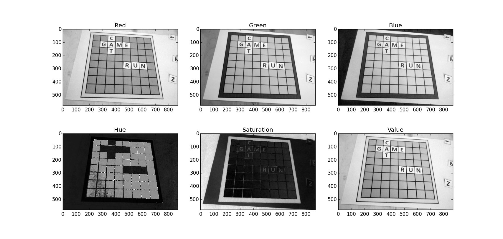

Elad Joseph
Computer Vision Algorithms Developer & Physicst
Haifa, Israel GitHub • LinkedIn • StackOverflowMy History & Profile
I am a computer vision and algorithms engineer with physics and computational modeling background.
I worked on 3D cameras at Microsoft and on computer vision algorithms at a military defense company.
Projects
Automatic Parking Detection
Automatic real-time parking detection (runs on Raspberry Pi). Check the project GitHub repository.
Examples:
Whist Card Game
This is a full implementation of the Israeli Whist card game, including GUI (PyQt) and basic AI.
Check the project GitHub repository.
 |
 |
 |
Scrabble OCR Android App
Real-time OCR Android app for Scrabble.
It uses OpenCV for Android for the image processing and Tesseract-OCR.
In the repository there are also two PC prototypes, implemented in Python and C++.
Check the project GitHub repository.
|  |  |
 |
 |
{kind=link}
OpenCV HDR Tutorial
An High-Dyanmic-Range (HDR) tutorial for the OpenCV documentation. This tutorial explains the basics of HDR photography and shows examples using the algorithms currently implemented in OpenCV.
 |
 |
 |
Education
BSc in Physics and BSc in Materials Engineering, Technion – Israel Institute of Technology.
MSc in Energy Engineering, Technion – Israel Institute of Technology.
Thesis: Computational Simulations of Thermoelectric Materials, for Renewable Energy Applications.
Academic Publications
Towards a Predictive Route for Selection of Doping Elements for the Thermoelectric Compound PbTe From First-Principles
Elad Joseph and Yaron Amouyal. J. Appl. Phys. 117, 175102 (2015)
Enhancing Thermoelectric Performance of PbTe-Based Compounds by Substituting Elements: A First Principles Study
Elad Joseph and Yaron Amouyal. J. Elect. Mater. 44, 6, 1460-1468 (2014)